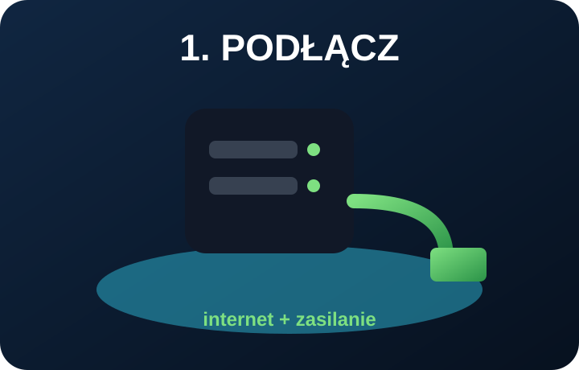
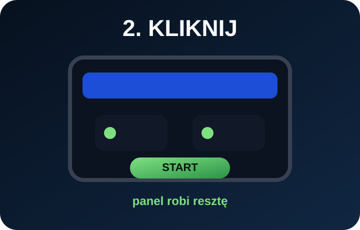
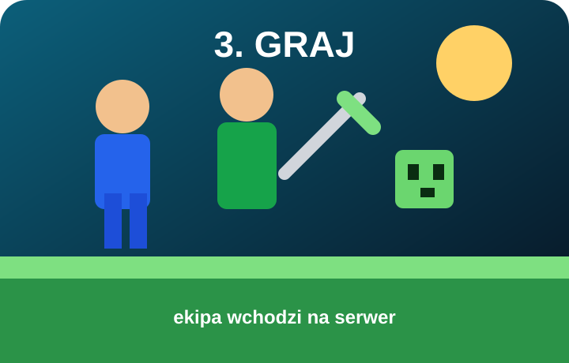

Podłącz
Box stoi w domu, biurze albo przy ekipie. Wpinasz zasilanie i internet.
MineBox • prywatny serwer gry
MineBox to fizyczne urządzenie dla ekipy, która chce mieć swój świat bez ręcznego ustawiania Linuxa, Javy, plików i portów.

Prosty schemat
Użytkownik nie musi znać komend. MineBox ma ukryć technikalia i dać prosty sposób na uruchomienie prywatnego serwera.
Box stoi w domu, biurze albo przy ekipie. Wpinasz zasilanie i internet.
W panelu wybierasz nazwę, tryb gry, wersję, ilość pamięci i podstawowe opcje.
MineBox przygotowuje serwer i uruchamia go bez ręcznego wpisywania komend.
Masz status, logi, restart, backupy i miejsce na późniejsze dodatki.

Wizualnie
MineBox łączy fizyczny serwer, prosty panel i świat Minecrafta. Klient kupuje urządzenie, podłącza je i zarządza swoim serwerem bez technicznego chaosu.
Produkt fizyczny
MineBox ma być gotowym zestawem dla osób, które chcą grać na swoim świecie, ale nie chcą samodzielnie stawiać serwera od zera.
Dla kogo?
MineBox pasuje do paczki znajomych, rodziny, szkoły, małej społeczności Discord albo wyjazdu LAN.
Planowane modele
Parametry i ceny będą dopasowane po testach prototypu. Na start strona pokazuje logiczny podział oferty.
Proces
Trzy proste kroki, które mają tłumaczyć produkt bez technicznego języka.

Prąd, internet i gotowe. Box stoi u Ciebie lub u klienta.

Panel pokazuje serwer, graczy, status i backupy.

Ekipa łączy się z adresem serwera i wchodzi do świata.
Napisz, ilu graczy ma grać i czy chcesz mody albo pluginy.
Panel klienta
Docelowy panel klienta pokaże status urządzenia, serwery, backupy, logi i podstawowe akcje administracyjne.
FAQ
MineBox idzie w stronę fizycznego urządzenia z prostym panelem. Hosting online może być osobną usługą w kolejnym etapie.
Nie taki jest cel. Użytkownik ma klikać w panelu, a techniczne rzeczy mają dziać się pod spodem.
Tak. Pluginy i mody są częścią planu, ale większe paczki modów będą wymagały mocniejszej wersji urządzenia.
Tak, docelowo panel klienta może działać pod adresem panel.mine-box.pl i łączyć się z fizycznym MineBoxem.
Kontakt
Napisz, ilu graczy ma grać, czy potrzebujesz pluginów/modów i gdzie box ma stać.
kontakt@mine-box.pl